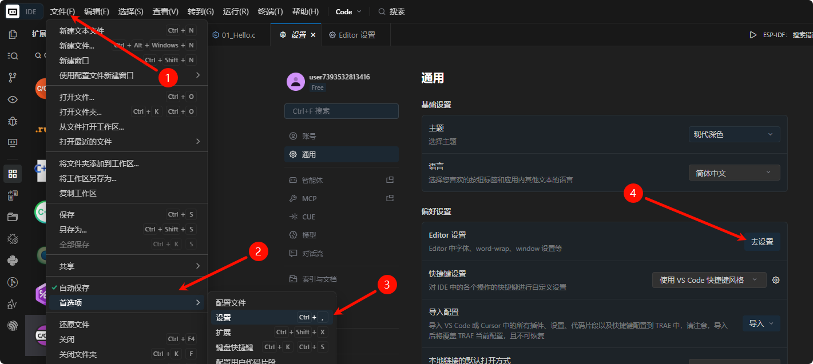
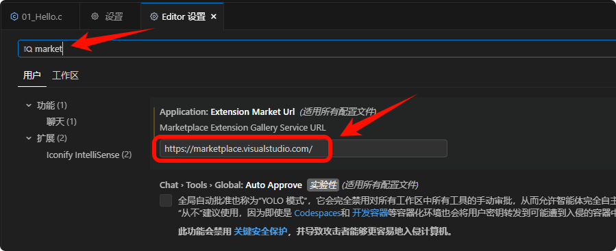
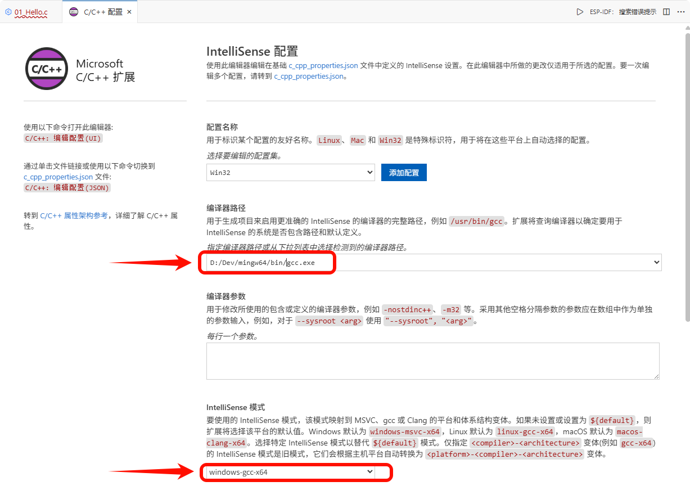
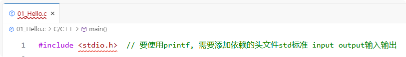
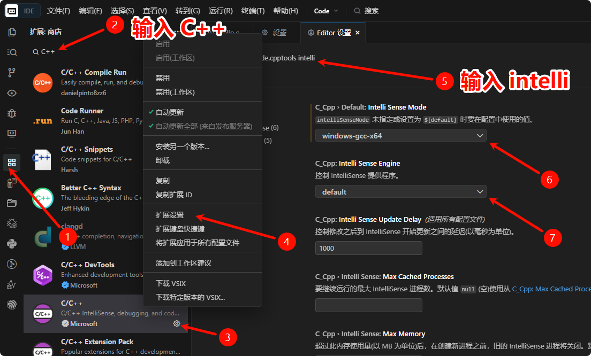

<!DOCTYPE lake>
<h2 data-lake-id="SvIpO" id="SvIpO"><span data-lake-id="uf2e62857" id="uf2e62857">修改官方插件市场地址</span></h2><p data-lake-id="u7863a276" id="u7863a276"><span class="lake-fontsize-12" data-lake-id="u014156c8" id="u014156c8" style="color: rgb(15, 17, 21)">在 Trae 里找不到 C++ 插件是正常现象，主要是因为 Trae 默认的插件源是 Open VSX，而安装 C/C++ 插件需要微软官方的市场地址。</span></p><p data-lake-id="ub9c841e2" id="ub9c841e2"><span class="lake-fontsize-12" data-lake-id="u54d03054" id="u54d03054" style="color: rgb(15, 17, 21)">一次配置，之后就能像在 VS Code 里一样直接搜索和安装海量插件了</span></p><ol list="ub57a939c"><li data-lake-id="u937c5653" fid="u53b844da" id="u937c5653"><strong><span class="lake-fontsize-12" data-lake-id="ua4bedbec" id="ua4bedbec" style="color: rgb(15, 17, 21)">打开设置</span></strong><span class="lake-fontsize-12" data-lake-id="ufe7edeb9" id="ufe7edeb9" style="color: rgb(15, 17, 21)">：点击“文件”-“首选项”-“设置”-“去设置”。</span></li><li data-lake-id="ub7616c29" fid="u53b844da" id="ub7616c29"><strong><span class="lake-fontsize-12" data-lake-id="u54abe251" id="u54abe251" style="color: rgb(15, 17, 21)">搜索配置项</span></strong><span class="lake-fontsize-12" data-lake-id="u66b27a6b" id="u66b27a6b" style="color: rgb(15, 17, 21)">：在搜索框里输入</span><span class="lake-fontsize-12" data-lake-id="ubfd8053e" id="ubfd8053e" style="color: rgb(15, 17, 21)"> </span><code data-lake-id="u6a924109" id="u6a924109"><span class="lake-fontsize-12" data-lake-id="u3cea81ac" id="u3cea81ac" style="color: rgb(15, 17, 21); background-color: rgb(235, 238, 242)">market</span></code><span class="lake-fontsize-12" data-lake-id="u357617e4" id="u357617e4" style="color: rgb(15, 17, 21)">，找到</span><span class="lake-fontsize-12" data-lake-id="u09a35cd2" id="u09a35cd2" style="color: rgb(15, 17, 21)"> </span><code data-lake-id="ua04813c2" id="ua04813c2"><span class="lake-fontsize-12" data-lake-id="uf102d5ad" id="uf102d5ad" style="color: rgb(15, 17, 21); background-color: rgb(235, 238, 242)">Application: Extension Market Url</span></code><span class="lake-fontsize-12" data-lake-id="u0dda5767" id="u0dda5767" style="color: rgb(15, 17, 21)">。</span></li><li data-lake-id="u75ccdd43" fid="u53b844da" id="u75ccdd43"><strong><span class="lake-fontsize-12" data-lake-id="uce72fc31" id="uce72fc31" style="color: rgb(15, 17, 21)">替换市场地址</span></strong><span class="lake-fontsize-12" data-lake-id="u3b8a7c73" id="u3b8a7c73" style="color: rgb(15, 17, 21)">：将它默认的地址</span><span class="lake-fontsize-12" data-lake-id="u4a3e62b4" id="u4a3e62b4" style="color: rgb(15, 17, 21)"> </span><code data-lake-id="ubddd38c5" id="ubddd38c5"><span class="lake-fontsize-12" data-lake-id="u135a79d6" id="u135a79d6" style="color: rgb(15, 17, 21); background-color: rgb(235, 238, 242)">https://open-vsx.org/</span></code><span class="lake-fontsize-12" data-lake-id="u0681f4f7" id="u0681f4f7" style="color: rgb(15, 17, 21)"> </span><span class="lake-fontsize-12" data-lake-id="u6c96159f" id="u6c96159f" style="color: rgb(15, 17, 21)">替换为 VS Code 官方市场地址：</span><span class="lake-fontsize-12" data-lake-id="ufeb93544" id="ufeb93544" style="color: rgb(15, 17, 21)"><br/></span><code data-lake-id="u33295089" id="u33295089"><span class="lake-fontsize-12" data-lake-id="u1b4176a3" id="u1b4176a3" style="color: rgb(15, 17, 21); background-color: rgb(235, 238, 242)">https://marketplace.visualstudio.com/</span></code></li><li data-lake-id="u7918fc3a" fid="u53b844da" id="u7918fc3a"><strong><span class="lake-fontsize-12" data-lake-id="u3949a44b" id="u3949a44b" style="color: rgb(15, 17, 21)">重启 IDE</span></strong><span class="lake-fontsize-12" data-lake-id="u4a02f2ea" id="u4a02f2ea" style="color: rgb(15, 17, 21)">：修改后，</span><strong><span class="lake-fontsize-12" data-lake-id="u841daeb4" id="u841daeb4" style="color: rgb(15, 17, 21)">必须完全关闭并重新打开 Trae</span></strong><span class="lake-fontsize-12" data-lake-id="uce269f93" id="uce269f93" style="color: rgb(15, 17, 21)">，配置才会生效。重启后，直接在扩展商店搜索 </span><code data-lake-id="u51fbc0bf" id="u51fbc0bf"><span class="lake-fontsize-12" data-lake-id="u1f42fef2" id="u1f42fef2" style="color: rgb(15, 17, 21); background-color: rgb(235, 238, 242)">C/C++</span></code><span class="lake-fontsize-12" data-lake-id="u79649232" id="u79649232" style="color: rgb(15, 17, 21)">，就能找到微软官方插件并一键安装了</span></li></ol><p data-lake-id="ueeb889d9" id="ueeb889d9"><span class="lake-fontsize-12" data-lake-id="uec34480e" id="uec34480e" style="color: rgb(15, 17, 21)">​</span><br/></p><p data-lake-id="u5e0c814b" id="u5e0c814b"><span class="lake-fontsize-12" data-lake-id="u103ffadc" id="u103ffadc" style="color: rgb(15, 17, 21)">打开设置步骤</span></p><p data-lake-id="ue577f76c" id="ue577f76c"></p><p data-lake-id="u89a346e7" id="u89a346e7"><span data-lake-id="u2834d8ee" id="u2834d8ee">修改为 </span><code data-lake-id="u137894d1" id="u137894d1"><span class="lake-fontsize-12" data-lake-id="u6b8694b2" id="u6b8694b2" style="color: rgb(15, 17, 21); background-color: rgb(235, 238, 242)">https://marketplace.visualstudio.com/</span></code><span class="lake-fontsize-12" data-lake-id="u393717d7" id="u393717d7" style="color: rgb(15, 17, 21)"> 然后重启Trae</span></p><p data-lake-id="u310dbba9" id="u310dbba9"></p><h2 data-lake-id="fMDSN" id="fMDSN"><span data-lake-id="uccaf150b" id="uccaf150b">基本配置参考</span></h2><a class="yuque-card-link" href="../../C%E8%AF%AD%E8%A8%80/1.%20C%E8%AF%AD%E8%A8%80%E5%89%8D%E8%A8%80/1.2%20%E7%BC%96%E7%A8%8B%E7%8E%AF%E5%A2%83.html#yqZ1j">yuque：yuque</a><h2 data-lake-id="bC0In" id="bC0In"><span data-lake-id="uf349796f" id="uf349796f">解决源代码跳转问题</span></h2><p data-lake-id="u473758f6" id="u473758f6"><br/></p><ul list="u213b301c"><li data-lake-id="ue7183639" fid="uaeecf345" id="ue7183639"><span data-lake-id="u823317b1" id="u823317b1">按下F1或Ctrl + Shift + P进入命令输入模式</span></li><li data-lake-id="u4ead1315" fid="uaeecf345" id="u4ead1315"><span data-lake-id="u913d535f" id="u913d535f">输入 </span><code data-lake-id="u3dcc21b6" id="u3dcc21b6"><span data-lake-id="ubd3438dd" id="ubd3438dd">C++ UI</span></code><span data-lake-id="uc2bd8a22" id="uc2bd8a22"> 按回车</span></li><li data-lake-id="ua811c2aa" fid="uaeecf345" id="ua811c2aa"><span data-lake-id="u47da3b5f" id="u47da3b5f">按照下图进行配置：这里的gcc要根据你的具体路径</span></li></ul><p data-lake-id="u5e49a6a4" id="u5e49a6a4"></p><h2 data-lake-id="Gc4gc" id="Gc4gc"><span data-lake-id="uc6d9aa8b" id="uc6d9aa8b">解决红色波浪号</span></h2><p data-lake-id="uf0f99300" id="uf0f99300"><span data-lake-id="ud0dfe200" id="ud0dfe200">如果头文件出现色波浪号问题</span></p><p data-lake-id="u5cc83e34" id="u5cc83e34"></p><h3 data-lake-id="elQ9P" id="elQ9P"><span data-lake-id="u7b80fc94" id="u7b80fc94">禁用clangd插件</span></h3><p data-lake-id="u05050d10" id="u05050d10"><span data-lake-id="u37da32f7" id="u37da32f7">确保clangd是“用户已全局禁用此扩展”状态</span></p><p data-lake-id="u32468025" id="u32468025"></p><h3 data-lake-id="vGC3N" id="vGC3N"><span data-lake-id="u652a7b31" id="u652a7b31">开启Intelli</span></h3><p data-lake-id="u1c8c3d27" id="u1c8c3d27"><span data-lake-id="u1dd90838" id="u1dd90838">如果还有波浪号，建议按如下步骤开启Intelli</span></p><p data-lake-id="u3ac2725b" id="u3ac2725b"></p>